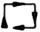
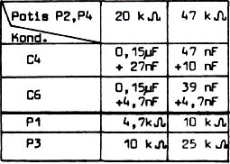
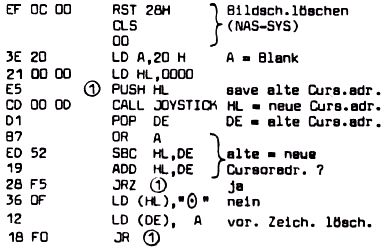

Nascom Journal |
6/80 7/80 |
Mit einem analogen Joystick ist es möglich, Bewegungen des Steuerknüppels in der X- Y- Ebene proportional dem Rechner mitzuteilen. Von dem verwendeten Vierquadranten – Potentiometer werden 2 Potis benutzt. Diese bestimmen die Impulsdauer zweier Monoflops. Die Digitalisierung erfolgt nach dem Zählverfahren.
Der augenblicklichen Stellung des Joysticks wird direkt eine Bildschirmadresse zugeordnet. Im Gegensatz zu digitalen Joysticks kann hier nach einem „CALL JOYSTICK“ dem Hauptprogramm die aktuelle Cursoradresse direkt im HL-Register übergeben werden.
Die Bilder 1 und 2 zeigen den Hardwareaufwand und den Anschluß an den Nascom. Die relokatierbar Subroutine „JOYSTICK“ ist ab 0D00H einzugeben. Nach dem Start des Testprogramms ab DD36 H sind die Trimmer P1 und P3 so abzugleichen, daß beider Joystickbewegung: der Cursor„⊙“ exakt dieser Bewegung nachkommt.Bei Bauteiletoleranzen und Abweichungen in der Versorgungsspannung kann ein Feinabgleich von C4 und C6 nötig sein.
Eine mögliche Anwendung zeigt das Programm „Snake“. Mit dem Joystick läßt sich dann eine „Schlange“ aus max. 63 Elementen zeichnen, die sich bei einer Fortsetzung automatisch am Ende verkürzt.
Werden die Potis P2 und/oder P4 durch NTC-, LDR-Bauelemente ersetzt, ergibt sich ein breites Experimentierfeld.
U. Krüger
C2,C3,C5 Keramikkondensator
C4,C6 Folienkondensator (!)

|
ruft Subroutine Joystick auf Start: 0D36 H Exit : RESET |

| Seite 6 von 52 |
|---|